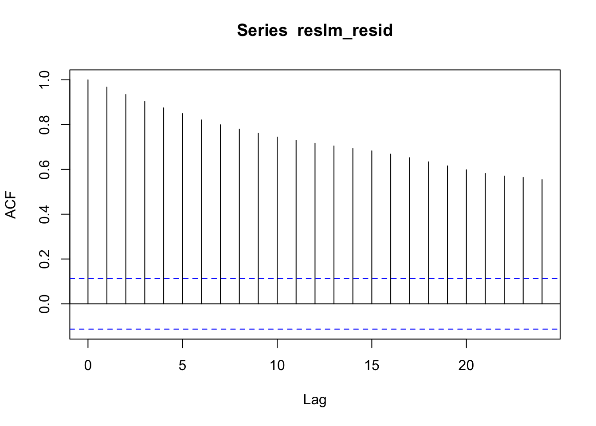
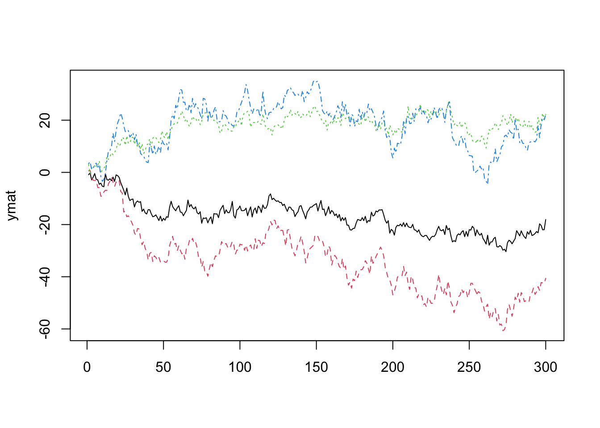

10 共和分分析・誤差修正モデル
10.1 見せかけの回帰
- 単位根検定で扱った内容の再掲
- 参考: 福地・伊藤, 10.1
Tlen <- 300
Seedv <- 1
set.seed(Seedv)
w1 <- rnorm(Tlen)
w2 <- rnorm(Tlen)
x <- cumsum(w1)
y <- cumsum(w2)
matplot(cbind(x,y), type = "l")
##
## Call:
## lm(formula = y ~ x)
##
## Residuals:
## Min 1Q Median 3Q Max
## -8.0778 -3.6190 0.0812 3.9438 8.6039
##
## Coefficients:
## Estimate Std. Error t value Pr(>|t|)
## (Intercept) 0.13230 0.55381 0.239 0.8114
## x 0.16810 0.06713 2.504 0.0128 *
## ---
## Signif. codes: 0 '***' 0.001 '**' 0.01 '*' 0.05 '.' 0.1 ' ' 1
##
## Residual standard error: 4.284 on 298 degrees of freedom
## Multiple R-squared: 0.02061, Adjusted R-squared: 0.01733
## F-statistic: 6.272 on 1 and 298 DF, p-value: 0.0128
- 残差に自己相関が残ることの確認


Durbin-Watson検定
- Durbin-Watson統計量
- 回帰残差の系列相関の有無を検定
- \(DW \approx 2(1-\rho)\).
- \(0<DW<4\). 無相関⇔ \(DW=2\)
- 見せかけの回帰の場合. \(DW\)が小さい傾向(正の系列相関)
## Loading required package: zoo##
## Attaching package: 'zoo'## The following objects are masked from 'package:base':
##
## as.Date, as.Date.numeric##
## Durbin-Watson test
##
## data: reslm
## DW = 0.060411, p-value < 2.2e-16
## alternative hypothesis: true autocorrelation is greater than 0- 単位根検定のためのR関数
- ADF検定: “tseries”内, adf.test(); “fUnitRoots”内, unitrootTest(), adfTest()
- Phillips-Perron検定: “urca”内, ur.pp(); “tseries”内, pp.test()
- KPSS検定: “urca”内, ur.kpss(); “tseries”内, kpss.test()
10.2 共和分検定
- 沖本, 問題6.3, p.144, を参考に4系列 \({\bf y}_t=(y_{1,t},y_{2,t},y_{3,t},y_{4,t})'\) を生成
- \(w_{1,t},w_{2,t}\)は, 互いに独立な単位根過程
- \(u_{1,t},u_{2,t},u_{3,t},u_{4,t}\)は互いに独立な定常過程. \(w_{1,t},w_{2,t}\)とも独立
\[ \left\{ \begin{split} y_{1,t} &= w_{1,t}+u_{1,t} \\ y_{2,t} &= 2 w_{1,t} + u_{1,t} \\ y_{3,t} &= w_{2,t} + u_{3,t} \\ y_{4,t} &= w_{1,t}+ 2 w_{2,t} + u_{4,t} \end{split} \right. \]
この時, 線形独立な共和分ベクトル \(\beta_1 = (1,-0.5,0,0)\), \(\beta_2 = (1,0,2,-1)\). それ以外の共和分ベクトルは\(\beta_1,\beta_2\)の線形和で表現される.
以下では, 全て正規乱数によりサンプルパス生成 (長さ=300)
Tlen <- 300 # 任意に変更可
Seedv <- 10 # 任意に変更可
set.seed(Seedv)
w1 <- cumsum(rnorm(Tlen))
w2 <- cumsum(rnorm(Tlen))
u1 <- rnorm(Tlen); u2 <- rnorm(Tlen)
u3 <- rnorm(Tlen); u4 <- rnorm(Tlen)
#
y1 <- w1 + u1
y2 <- 2 * w1 + u2
y3 <- w2 + u3
y4 <- w1 + 2 * w2 + u4
#
# beta1 = (1, -0.5, 0, 0)
# beta2 = (1, 0, 2, -1)
#
ymat <- cbind(y1, y2, y3, y4)
matplot(ymat, type = "l")
- 各成分が単位根過程 \(I(1)\) であることを確認
##
## Title:
## Augmented Dickey-Fuller Test
##
## Test Results:
## PARAMETER:
## Lag Order: 1
## STATISTIC:
## Dickey-Fuller: -0.1277
## P VALUE:
## 0.5756
##
## Description:
## Wed Jan 24 15:06:26 2024 by user:##
## Title:
## Augmented Dickey-Fuller Test
##
## Test Results:
## PARAMETER:
## Lag Order: 1
## STATISTIC:
## Dickey-Fuller: 0.1048
## P VALUE:
## 0.6497
##
## Description:
## Wed Jan 24 15:06:26 2024 by user:##
## Title:
## Augmented Dickey-Fuller Test
##
## Test Results:
## PARAMETER:
## Lag Order: 1
## STATISTIC:
## Dickey-Fuller: -0.1246
## P VALUE:
## 0.5766
##
## Description:
## Wed Jan 24 15:06:26 2024 by user:##
## Title:
## Augmented Dickey-Fuller Test
##
## Test Results:
## PARAMETER:
## Lag Order: 1
## STATISTIC:
## Dickey-Fuller: -0.7516
## P VALUE:
## 0.3768
##
## Description:
## Wed Jan 24 15:06:26 2024 by user:10.2.1 Engle-Grangerの方法
- 共和分検定
- Philips-Ouliaris検定
- 'urca'パッケージ内, ca.po関数
- demean (使用するランダムウォーク・モデルのトレンドの指定): "none", "const"(定数項), "trend"(定数項+時間トレンド)
- type (検定種類): "Pu"(デフォルト), "Pz"##
## ########################################
## # Phillips and Ouliaris Unit Root Test #
## ########################################
##
## Test of type Pu
## detrending of series with constant only
##
##
## Call:
## lm(formula = z[, 1] ~ z[, -1])
##
## Residuals:
## Min 1Q Median 3Q Max
## -3.6576 -0.7442 -0.0535 0.7229 3.7571
##
## Coefficients:
## Estimate Std. Error t value Pr(>|t|)
## (Intercept) -0.552717 0.180515 -3.062 0.0024 **
## z[, -1] 0.485335 0.004978 97.500 <2e-16 ***
## ---
## Signif. codes: 0 '***' 0.001 '**' 0.01 '*' 0.05 '.' 0.1 ' ' 1
##
## Residual standard error: 1.114 on 298 degrees of freedom
## Multiple R-squared: 0.9696, Adjusted R-squared: 0.9695
## F-statistic: 9506 on 1 and 298 DF, p-value: < 2.2e-16
##
##
## Value of test-statistic is: 250.2856
##
## Critical values of Pu are:
## 10pct 5pct 1pct
## critical values 27.8536 33.713 48.0021- → 帰無仮説棄却. y1とy2には共和分関係あり
##
## ########################################
## # Phillips and Ouliaris Unit Root Test #
## ########################################
##
## Test of type Pu
## detrending of series with constant only
##
##
## Call:
## lm(formula = z[, 1] ~ z[, -1])
##
## Residuals:
## Min 1Q Median 3Q Max
## -15.706 -3.851 1.099 4.190 11.736
##
## Coefficients:
## Estimate Std. Error t value Pr(>|t|)
## (Intercept) -5.79847 1.11523 -5.199 3.72e-07 ***
## z[, -1] -0.63880 0.06101 -10.470 < 2e-16 ***
## ---
## Signif. codes: 0 '***' 0.001 '**' 0.01 '*' 0.05 '.' 0.1 ' ' 1
##
## Residual standard error: 5.463 on 298 degrees of freedom
## Multiple R-squared: 0.2689, Adjusted R-squared: 0.2665
## F-statistic: 109.6 on 1 and 298 DF, p-value: < 2.2e-16
##
##
## Value of test-statistic is: 17.1324
##
## Critical values of Pu are:
## 10pct 5pct 1pct
## critical values 27.8536 33.713 48.0021- → 帰無仮説棄却されず. y1とy3には共和分関係なし
10.2.2 Johansenの方法
- 観測時系列がGaussian VAR(p)に従う場合
(1) 最大固有値検定
- \(H_0\): 共和分ランク\(=r\), \(H_1\): 共和分ランク\(=r+1\)
- 'urca'パッケージ内, ca.jo関数:
- type (検定の種類): ‘eigen’(最大固有値検定) or ‘trace’(トレース検定)
- ecdet (トレンド種類): ‘none’(切片項なし), ‘const’(定数項あり),‘trend’(トレンド項あり)
- K (時系列(水準)のVAR表現におけるラグ次数)
- spec (VECMの定式化の2つの方法の一つを選択): "longrun"(デフォルト), or "transitory"
- season (季節ダミー): データの頻度を指定(例, 四半期の場合は4)- 全変数に対して実行
##
## ######################
## # Johansen-Procedure #
## ######################
##
## Test type: maximal eigenvalue statistic (lambda max) , with linear trend
##
## Eigenvalues (lambda):
## [1] 0.39399267 0.35373609 0.04001843 0.01669478
##
## Values of teststatistic and critical values of test:
##
## test 10pct 5pct 1pct
## r <= 3 | 5.02 6.50 8.18 11.65
## r <= 2 | 12.17 12.91 14.90 19.19
## r <= 1 | 130.09 18.90 21.07 25.75
## r = 0 | 149.26 24.78 27.14 32.14
##
## Eigenvectors, normalised to first column:
## (These are the cointegration relations)
##
## y1.l2 y2.l2 y3.l2 y4.l2
## y1.l2 1.0000000 1.0000000 1.00000000 1.000000
## y2.l2 -0.6347789 -0.1341194 0.74761830 24.357249
## y3.l2 -0.5785340 1.4100169 -0.01803175 -6.710469
## y4.l2 0.2788528 -0.6893143 -1.62504044 48.535783
##
## Weights W:
## (This is the loading matrix)
##
## y1.l2 y2.l2 y3.l2 y4.l2
## y1.d -0.51186630 -0.320181456 -0.00621887 -2.424265e-04
## y2.d 0.63903190 0.008777047 -0.01134031 -4.269731e-04
## y3.d 0.44326372 -0.453798733 0.01223929 -9.786591e-05
## y4.d -0.06251362 0.124762555 0.01714466 -5.047995e-04- \(r=0\)棄却. \(r \le 1\)棄却, \(r \le 2\)棄却されず.
- → 共和分ベクトルの個数\(=2\)
(2) トレース検定
- \(H_0\): 共和分ランク\(=r\), \(H_1\): 共和分ランク\(=m\) (原系列は定常)
result_t1 <- ca.jo(ymat, ecdet = "none", type = "trace", spec = "longrun")
#result_t1 <- ca.jo(ymat, ecdet = "const", type = "trace", spec = "longrun")
summary(result_t1)##
## ######################
## # Johansen-Procedure #
## ######################
##
## Test type: trace statistic , with linear trend
##
## Eigenvalues (lambda):
## [1] 0.39399267 0.35373609 0.04001843 0.01669478
##
## Values of teststatistic and critical values of test:
##
## test 10pct 5pct 1pct
## r <= 3 | 5.02 6.50 8.18 11.65
## r <= 2 | 17.19 15.66 17.95 23.52
## r <= 1 | 147.28 28.71 31.52 37.22
## r = 0 | 296.54 45.23 48.28 55.43
##
## Eigenvectors, normalised to first column:
## (These are the cointegration relations)
##
## y1.l2 y2.l2 y3.l2 y4.l2
## y1.l2 1.0000000 1.0000000 1.00000000 1.000000
## y2.l2 -0.6347789 -0.1341194 0.74761830 24.357249
## y3.l2 -0.5785340 1.4100169 -0.01803175 -6.710469
## y4.l2 0.2788528 -0.6893143 -1.62504044 48.535783
##
## Weights W:
## (This is the loading matrix)
##
## y1.l2 y2.l2 y3.l2 y4.l2
## y1.d -0.51186630 -0.320181456 -0.00621887 -2.424265e-04
## y2.d 0.63903190 0.008777047 -0.01134031 -4.269731e-04
## y3.d 0.44326372 -0.453798733 0.01223929 -9.786591e-05
## y4.d -0.06251362 0.124762555 0.01714466 -5.047995e-04- \(r=0\)棄却. \(r \le 1\)棄却, \(r \le 2\)棄却されず.
- → 共和分ベクトルの個数\(=2\)
- 共和分ベクトルをウェイトとする\(Yt\)の各成分の線形和計算
- → 定常性の確認
## Warning in fUnitRoots::adfTest(ts_new[, 1]): p-value smaller than printed
## p-value##
## Title:
## Augmented Dickey-Fuller Test
##
## Test Results:
## PARAMETER:
## Lag Order: 1
## STATISTIC:
## Dickey-Fuller: -10.3616
## P VALUE:
## 0.01
##
## Description:
## Wed Jan 24 15:06:26 2024 by user:## Warning in fUnitRoots::adfTest(ts_new[, 2]): p-value smaller than printed
## p-value##
## Title:
## Augmented Dickey-Fuller Test
##
## Test Results:
## PARAMETER:
## Lag Order: 1
## STATISTIC:
## Dickey-Fuller: -12.4858
## P VALUE:
## 0.01
##
## Description:
## Wed Jan 24 15:06:26 2024 by user:10.3 誤差修正モデル: データ分析例 (Tsay, MTS, Ch5)
- 出所: Tsay, MTS, Ch5より抜粋（適宜, 補足説明挿入, または修正)
10.3.1 共和分検定
- Tsay, 5.9, pp.310–
## Loading required package: fUnitRoots## Loading required package: urca##
## Attaching package: 'urca'## The following objects are masked from 'package:fUnitRoots':
##
## punitroot, qunitroot, unitrootTable## Loading required package: MTS分析に使用するデータ
- 月次社債イールド, 1954.7–2005.3
- FRB St. Louisのデータ
- 系列(Aaa, Baa)が2変量VAR(\(p\))モデルに従うと仮定し. 次数\(p\)を決定:
ifl <- file.path(dir_MTS, "m-bnd.txt") # dir_MTS: m-bnd.txtを格納しているディレクトリ
da <- read.table(ifl)
head(da)## V1 V2 V3 V4 V5
## 1 1954 7 1 2.89 3.50
## 2 1954 8 1 2.87 3.49
## 3 1954 9 1 2.89 3.47
## 4 1954 10 1 2.87 3.46
## 5 1954 11 1 2.89 3.45
## 6 1954 12 1 2.90 3.45bnd <- da[, 4:5]
colnames(bnd) <- c("Aaa", "Baa")
m1 <- MTS::VARorder(bnd) # original function, now in 'MTS'## selected order: aic = 11
## selected order: bic = 3
## selected order: hq = 3
## Summary table:
## p AIC BIC HQ M(p) p-value
## [1,] 0 -0.5697 -0.5697 -0.5697 0.0000 0.0000
## [2,] 1 -7.8664 -7.8374 -7.8551 4331.0806 0.0000
## [3,] 2 -8.1844 -8.1264 -8.1618 195.5266 0.0000
## [4,] 3 -8.2589 -8.1720 -8.2251 51.6109 0.0000
## [5,] 4 -8.2552 -8.1393 -8.2101 5.5112 0.2387
## [6,] 5 -8.2481 -8.1032 -8.1917 3.5073 0.4768
## [7,] 6 -8.2751 -8.1013 -8.2075 23.4161 0.0001
## [8,] 7 -8.2803 -8.0775 -8.2014 10.6262 0.0311
## [9,] 8 -8.2826 -8.0507 -8.1924 8.9080 0.0634
## [10,] 9 -8.2784 -8.0176 -8.1769 5.1613 0.2711
## [11,] 10 -8.2775 -7.9877 -8.1648 7.0457 0.1335
## [12,] 11 -8.2840 -7.9652 -8.1600 11.2224 0.0242
## [13,] 12 -8.2812 -7.9334 -8.1459 5.8956 0.2071
## [14,] 13 -8.2716 -7.8949 -8.1251 2.0355 0.7292- → BIC, HQ(Nannan-Quinn情報量規準), \(p=3\)を選択
次に,
- 各系列の単位根検定 (ADF検定)
- \(H_0\): 単位根有り


# または,
# ar(bnd[, 1]) # --> AIC, p = 3
# ar(bnd[, 2]) # --> AIC, p = 2
#
fUnitRoots::adfTest(bnd[, 1], lags = 3, type = "c")##
## Title:
## Augmented Dickey-Fuller Test
##
## Test Results:
## PARAMETER:
## Lag Order: 3
## STATISTIC:
## Dickey-Fuller: -1.7007
## P VALUE:
## 0.425
##
## Description:
## Wed Jan 24 15:06:28 2024 by user:##
## Title:
## Augmented Dickey-Fuller Test
##
## Test Results:
## PARAMETER:
## Lag Order: 2
## STATISTIC:
## Dickey-Fuller: -1.6221
## P VALUE:
## 0.4544
##
## Description:
## Wed Jan 24 15:06:28 2024 by user:- –> Aaa, Baa系列のADF検定、棄却されない (H0: 単位根非定常)

## Aaa Baa
## 0.01862195 0.02077461- 階階差列の平均値ベクトルは, ゼロから有意に離れていない → 共和分検定に, 定数項入れない (Tsay, p.310)
- 共和分検定におけるトレンドの指定. Tsay, p.304を参照
10.3.2 Johansenの方法 (Johansen-Procedure)
- Johansenの方法 → 共和分関係の検定, 共和分ベクトルや共和分ランク(個数)の推定
最大固有値法
- \(H_0\): 多くても\(r\)個の共和分関係しか存在しない vs \(H_1\): \((r+1)\)個の共和分関係が存在する
- (\(H_0\): 共和分ランク\(=r\) vs \(H_1\): 共和分ランク\(=r+1\))
- urca::ca.jp関数
- x: 共和分を調べたいデータ行列 (原系列)
- type: 検定方法の種類. 'eigen'(最大固有値法), 'trace' (トレース法)
- ecdet: トレンド指定. 'none' (なし), 'const' (定数項有), 'trend' (線形トレンド有)
- $\Delta {\bf y}_t = {\bf \mu}_0 + {\bf \mu}_1 t+\cdots$
- (→ 共和分関係にも定数項や線形トレンドが含まれる)
- K: 系列(水準)のVARラグ次数
- spec: VECMの特定化. "longrun" ($ {\bf Γ}_i , 長期的(累積)インパクト), "transitory" ((${\bf Γ}_i$, 一時的インパクト)
)##
## ######################
## # Johansen-Procedure #
## ######################
##
## Test type: maximal eigenvalue statistic (lambda max) , with linear trend
##
## Eigenvalues (lambda):
## [1] 0.054773196 0.004665298
##
## Values of teststatistic and critical values of test:
##
## test 10pct 5pct 1pct
## r <= 1 | 2.84 6.50 8.18 11.65
## r = 0 | 34.19 12.91 14.90 19.19
##
## Eigenvectors, normalised to first column:
## (These are the cointegration relations)
##
## Aaa.l2 Baa.l2
## Aaa.l2 1.0000000 1.000000
## Baa.l2 -0.8856789 -2.723912
##
## Weights W:
## (This is the loading matrix)
##
## Aaa.l2 Baa.l2
## Aaa.d -0.04696894 0.002477064
## Baa.d 0.04046524 0.002139536- → \(r=0\)は棄却. \(r=1\)は棄却されず
- → \(r=1\) (共和分有. 共和分ベクトルの個数 (\(\Pi\) 行列のランク))
#m3 <- urca::ca.jo(bnd, K = 2, ecdet = c("none"), spec = c("transitory"))
#summary(m3)
# 定数項有のケース
m3 <- urca::ca.jo(bnd, K = 2, ecdet = c("const"), spec = c("longrun"))
summary(m3)##
## ######################
## # Johansen-Procedure #
## ######################
##
## Test type: maximal eigenvalue statistic (lambda max) , without linear trend and constant in cointegration
##
## Eigenvalues (lambda):
## [1] 5.477346e-02 4.878009e-03 6.308723e-20
##
## Values of teststatistic and critical values of test:
##
## test 10pct 5pct 1pct
## r <= 1 | 2.97 7.52 9.24 12.97
## r = 0 | 34.19 13.75 15.67 20.20
##
## Eigenvectors, normalised to first column:
## (These are the cointegration relations)
##
## Aaa.l2 Baa.l2 constant
## Aaa.l2 1.000000000 1.000000 1.000000
## Baa.l2 -0.885675435 -2.701784 -3.315369
## constant -0.003491742 16.399576 -13.776952
##
## Weights W:
## (This is the loading matrix)
##
## Aaa.l2 Baa.l2 constant
## Aaa.d -0.04699903 0.002507156 1.086407e-18
## Baa.d 0.04043910 0.002165681 -1.197343e-18トレース法
- \(H_0\): 多くても\(r\)個の共和分関係しか存在しない vs \(H_1\): 全ての変数が定常
- (\(H_0\): 共和分ランク\(=r\) vs \(H_1\): 共和分ランク\(=m\) (原系列は定常))
m4 <- urca::ca.jo(bnd, K = 2, ecdet = c("none"), type = c("trace"), spec = c("transitory"))
summary(m4)##
## ######################
## # Johansen-Procedure #
## ######################
##
## Test type: trace statistic , with linear trend
##
## Eigenvalues (lambda):
## [1] 0.054773196 0.004665298
##
## Values of teststatistic and critical values of test:
##
## test 10pct 5pct 1pct
## r <= 1 | 2.84 6.50 8.18 11.65
## r = 0 | 37.03 15.66 17.95 23.52
##
## Eigenvectors, normalised to first column:
## (These are the cointegration relations)
##
## Aaa.l1 Baa.l1
## Aaa.l1 1.0000000 1.000000
## Baa.l1 -0.8856789 -2.723912
##
## Weights W:
## (This is the loading matrix)
##
## Aaa.l1 Baa.l1
## Aaa.d -0.04696894 0.002477064
## Baa.d 0.04046524 0.002139536- → \(r=0\)は棄却. \(r=1\)は棄却されず
- → \(r=1\) (同)
## Aaa.l1 Baa.l1
## Aaa.l1 1.0000000 1.000000
## Baa.l1 -0.8856789 -2.723912→ 共和分ベクトル: \((1, -0.886)\)
得られた``cointegration’’系列 \(w_t=1 \cdot Aaa_t - 0.886 \cdot Baa_t\)に対して単位根検定
# wt <- bnd[, 1] - 0.886 * bnd[, 2]
wt <- as.matrix(bnd) %*% coint_vec[, 1]
#
fUnitRoots::adfTest(wt, lags = 3, type = "c")## Warning in fUnitRoots::adfTest(wt, lags = 3, type = "c"): p-value smaller than
## printed p-value##
## Title:
## Augmented Dickey-Fuller Test
##
## Test Results:
## PARAMETER:
## Lag Order: 3
## STATISTIC:
## Dickey-Fuller: -4.6052
## P VALUE:
## 0.01
##
## Description:
## Wed Jan 24 15:06:28 2024 by user:- → \(p\)値\(=0.01\) (単位根無)

- → ``定常時系列の特徴を示す’’
10.3.3 誤差修正モデル(ECM)の推定
- 前提: VARモデルの次数\(p\),共和分ベクトルの数は既知 (上で得られた)
ECMのOLS推定
- 共和分ベクトル\(\beta_t\)が既知の場合:
- 上で得られた ``cointegrating系列’’wt=bnd[,1]-0.886*bnd[,2] を所与として \((p=3, r=1)\), ECMをOLS推定
- MTS::ECMvar1(x, p, wt=wt, include.const = FALSE, fixed = NULL, output = TRUE)
- ECM VAR(p)モデルのOLS推定 (wtが既知の場合)
- x: (Txk), k次元共和分VAR過程
- wt: (Txm), m次元共和分過程
- include.const: 定数項の有無 (デフォルト=F)## alpha:
## Aaa Baa
## [1,] -0.00122 0.0634
## standard error
## [,1] [,2]
## [1,] 0.0347 0.0306
## AR coefficient matrix
## AR( 1 )-matrix
## Aaa Baa
## Aaa 0.452 -0.00149
## Baa 0.293 0.20380
## standard error
## [,1] [,2]
## [1,] 0.0879 0.1008
## [2,] 0.0774 0.0887
## AR( 2 )-matrix
## Aaa Baa
## Aaa -0.300 0.0535
## Baa -0.151 0.0274
## standard error
## [,1] [,2]
## [1,] 0.0860 0.0940
## [2,] 0.0757 0.0827
## -----
## Residuals cov-mtx:
## Aaa Baa
## Aaa 0.0400851 0.03167180
## Baa 0.0316718 0.03105888
##
## det(sse) = 0.0002418953
## AIC = -8.294165
## BIC = -8.221721## Aaa Baa
## xmtx -0.001217005 0.06339082
## Aaa 0.451993390 0.29303941
## Baa -0.001491101 0.20379673
## Aaa -0.299907502 -0.15075817
## Baa 0.053499341 0.02742606## [,1] [,2]
## [1,] 0.03471368 0.03055639
## [2,] 0.08790257 0.07737541
## [3,] 0.10080919 0.08873634
## [4,] 0.08600254 0.07570293
## [5,] 0.09396739 0.08271391## Aaa Baa
## xmtx -0.03505836 2.0745518
## Aaa 5.14198170 3.7872419
## Baa -0.01479132 2.2966546
## Aaa -3.48719367 -1.9914443
## Baa 0.56933946 0.3315773- 推定されたECM (\(w_t=\beta'{\bf y}_t=(1,- 0.886){\bf y}_t\)) \[ \Delta {\bf y}_t = \left[\begin{array}{r} -0.001 \\ 0.064 \end{array}\right] w_t + \left[\begin{array}{rr} 0.452 & -0.001 \\ 0.293 & 0.204 \end{array} \right] \Delta {\bf y}_{t-1} \] \[ +\left[\begin{array}{rr} -0.300 & 0.054 \\ -0.151 & 0.028 \end{array} \right] \Delta {\bf y}_{t-2} + \epsilon_t,\quad \hat{\Sigma}= \frac{1}{100} \left[\begin{array}{rr} 4.01 & 3.17 \\ 3.17 & 3.11 \end{array} \right] \]
OLS推定されたECMの修正
- ECMの修正 (パラメータ数削減)
- 有意でない係数を0に置く
- MTS::refECMvar1(m1, thres = 1)
- ECM VAR(p)モデルの制約付きOLS推定 (wtが既知の場合)
- thres: t-ratioの閾値(デフォルト=1)
- |t-ratio| < thres の推定係数を0に置き換える## Equation: 1 npar = 2
## Equation: 2 npar = 4
## alpha:
## [,1] [,2]
## [1,] 0 0.0625
## standard error
## [,1] [,2]
## [1,] 1 0.0304
## AR coefficient matrix
## AR( 1 )-matrix
## [,1] [,2]
## [1,] 0.448 0.000
## [2,] 0.286 0.212
## standard error
## [,1] [,2]
## [1,] 0.0393 1.0000
## [2,] 0.0746 0.0855
## AR( 2 )-matrix
## [,1] [,2]
## [1,] -0.256 0
## [2,] -0.129 0
## standard error
## [,1] [,2]
## [1,] 0.0393 1
## [2,] 0.0382 1
## -----
## Residuals cov-mtx:
## [,1] [,2]
## [1,] 0.04010853 0.03168277
## [2,] 0.03168277 0.03106450
##
## det(sse) = 0.0002421536
## AIC = -8.306234
## BIC = -8.262768- 推定されたECM (修正後) \[ \Delta {\bf y}_t = \left[\begin{array}{r} 0.000 \\ 0.063 \end{array}\right] w_t + \left[\begin{array}{rr} 0.448 & 0.000 \\ 0.286 & 0.212 \end{array} \right] \Delta {\bf y}_{t-1} \] \[ +\left[\begin{array}{rr} -0.256 & 0.000 \\ -0.129 & 0.000 \end{array} \right] \Delta {\bf y}_{t-2} + \epsilon_t,\quad \hat{\Sigma}= \frac{1}{100} \left[\begin{array}{rr} 4.01 & 3.17 \\ 3.17 & 3.11 \end{array} \right] \]
# pacf(m2$residuals)
# --> model checking, 若干の系列相関, 相互相関有り(教科書の記述と齟齬?)
# --> alpha(1,1)=0 <-- Aaa系列の1階階差系列は定常
m2$coef## [,1] [,2]
## [1,] 0.0000000 0.06250339
## [2,] 0.4484522 0.28620026
## [3,] 0.0000000 0.21172072
## [4,] -0.2559947 -0.12908889
## [5,] 0.0000000 0.00000000## [,1] [,2]
## [1,] 1.00000000 0.03044171
## [2,] 0.03929053 0.07458234
## [3,] 1.00000000 0.08546551
## [4,] 0.03930742 0.03821387
## [5,] 1.00000000 1.00000000## [,1] [,2]
## [1,] 0.000000 2.045509
## [2,] 5.101696 3.698853
## [3,] 0.000000 2.385953
## [4,] -2.976594 -1.705203
## [5,] 0.000000 0.000000ECMのQML推定
- 共和分ベクトル\(\beta_t\)が未知の場合:
- 仮定:イノベーション系列 \({\epsilon_t}\) がGaussian
- MTS::ECMvar(x,p,ibeta)
- ECM VAR(p)モデルのQML推定 (wtが未知の場合)
- ibeta: co-integrating matrix初期値
- alpha: alpha行列の初期値 (デフォルト=NULL)# beta <- c(1, -0.886) ### Initial value of co-integration
beta <- coint_vec[, 1]
m3 <- MTS::ECMvar(bnd, p = 3, ibeta = beta, include.const = F) #### Joint estimation## Order p: 3 Co-integrating rank: 1
## Number of parameters: 11
## initial estimates: -0.001217005 0.06339082 -0.8856789 0.4519934 -0.001491101 -0.2999075 0.05349934 0.2930394 0.2037967 -0.1507582 0.02742606
## Par. Lower-bounds: -0.05328753 0.01755623 -0.9464619 0.3201395 -0.1527049 -0.4289113 -0.08745174 0.1769763 0.07069222 -0.2643126 -0.09664481
## Par. Upper-bounds: 0.05085352 0.1092254 -0.8248958 0.5838472 0.1497227 -0.1709037 0.1944504 0.4091025 0.3369012 -0.03720378 0.1514969
## Final Estimates: -0.0007844935 0.06377964 -0.8865271 0.451819 -0.001406126 -0.3000979 0.05359478 0.2928488 0.2039182 -0.150974 0.02759907
##
## Coefficient(s):
## Estimate Std. Error t value Pr(>|t|)
## -0.0007845 0.0359051 -0.022 0.982568
## 0.0637796 0.0314069 2.031 0.042280 *
## Baa.l1 -0.8865271 0.0055004 -161.176 < 2e-16 ***
## 0.4518190 0.0878174 5.145 2.68e-07 ***
## -0.0014061 0.1022704 -0.014 0.989030
## -0.3000979 0.0864320 -3.472 0.000516 ***
## 0.0535948 0.0948894 0.565 0.572201
## 0.2928488 0.0772944 3.789 0.000151 ***
## 0.2039182 0.0897482 2.272 0.023080 *
## -0.1509740 0.0760263 -1.986 0.047054 *
## 0.0275991 0.0833998 0.331 0.740701
## ---
## Signif. codes: 0 '***' 0.001 '**' 0.01 '*' 0.05 '.' 0.1 ' ' 1
## alpha:
## [,1]
## [1,] -0.000784
## [2,] 0.063780
## standard error
## [,1]
## [1,] 0.0359
## [2,] 0.0314
## beta:
## [,1]
## [1,] 1.000
## [2,] -0.887
## standard error
## [,1]
## [1,] 1.0000
## [2,] 0.0055
## AR coefficient matrix
## AR( 1 )-matrix
## [,1] [,2]
## [1,] 0.452 -0.00141
## [2,] 0.293 0.20392
## standard error
## [,1] [,2]
## [1,] 0.0878 0.1023
## [2,] 0.0773 0.0897
## AR( 2 )-matrix
## [,1] [,2]
## [1,] -0.300 0.0536
## [2,] -0.151 0.0276
## standard error
## [,1] [,2]
## [1,] 0.0864 0.0949
## [2,] 0.0760 0.0834
## -----
## Residuals cov-mtx:
## Aaa Baa
## Aaa 0.0399535 0.03156630
## Baa 0.0315663 0.03095427
##
## det(sse) = 0.0002403005
## AIC = -8.297496
## BIC = -8.217807## [1] 1## [,1]
## [1,] -0.0007844935
## [2,] 0.0637796425## [,1]
## [1,] 1.0000000
## [2,] -0.8865271## [,1] [,2]
## [1,] 0.451818972 0.29284885
## [2,] -0.001406126 0.20391818
## [3,] -0.300097916 -0.15097397
## [4,] 0.053594777 0.02759907## [,1] [,2]
## [1,] 0.08781738 0.07729435
## [2,] 0.10227039 0.08974821
## [3,] 0.08643197 0.07602634
## [4,] 0.09488937 0.08339984推定されたECM (修正後) \[ \Delta {\bf y}_t = \left[\begin{array}{r} -0.001 \\ 0.064 \end{array}\right] [1,-0.887] {\bf y}_t + \left[\begin{array}{rr} 0.452 & -0.001 \\ 0.293 & 0.204 \end{array} \right] \Delta {\bf y}_{t-1} \] \[ +\left[\begin{array}{rr} -0.300 & 0.054 \\ -0.151 & 0.028 \end{array} \right] \Delta {\bf y}_{t-2} + \epsilon_t,\quad \hat{\Sigma}= \frac{1}{100} \left[\begin{array}{rr} 4.00 & 3.16 \\ 3.16 & 3.10 \end{array} \right] \]
→ 初期モデル(m1)と近い結果
``サンプルサイズが比較的大きい一方で低次元であり, 驚くことでない’’
(補足): \(w_t=1 \cdot Aaa_t - 0.887 \cdot Baa_t\)が定常過程
- \(w_t>0\) → Aaa_tのイールドが相対高, Baa_tが相対安 → スプレッド”縮小”時
- → \({\bf y}_t\)への影響; \([-0.001,0.064]'w_t\)
- 翌月のAaa_tイールドを\(0.001\cdot w_t\)押し下げる
- 翌月のBaa_tイールドを\(0.064\cdot w_t\)押し上げる
- → 翌月のスプレッドが”拡大”する方向に作用